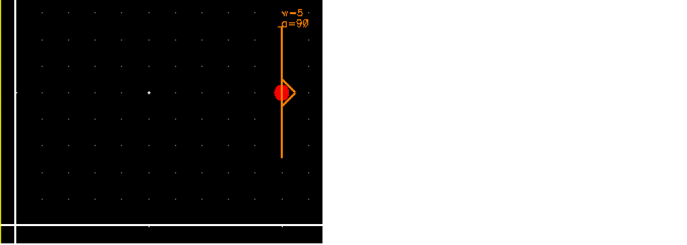

phoCreatePort
phoCreatePort(d_cellViewId l_lpp t_x t_y t_portDirection t_netName t_termName t_pinName n_width n_angle n_radius[n_portWidth] [n_portHeight] =>d_portShape/ nil
Description
(Virtuoso Photonics Option) Creates a physical connection point (port) for an optical net on layer type waveguide. The area of the optical port is used to trigger auto-abutment of the instances to ensure that the ports with matching attributes (layer, angle, or width) are positioned to avoid any cuts between the facets.
This port must be on the layer manufacturing grid to enable proper inter-device abutment. You should not use the xy attribute of a facet, which is a mathematical point to set these values as you would be using the database rounding and not the CC routing. Pick the start and end point of the ccPath corresponding to the facet to set the x and y coordinates of the port.
For auto-abutment, the width attribute of the optical port does not have to match the physical width and height of the shape (ellipse) used to draw the port.
Arguments
Value Returned
Example
phoCreatePort(cv list("waveguide" "drawing") 10.0 5.0 "inputOutput" "Opt1" "Opt1" nil 5.0 90.0 0.0)
=> db:0x215db89c

Related Topics
Return to top